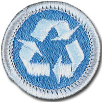

Environmental Science - In-Person Class Notes
Please arrive with ample time prior to the start time of your class for registration. Remember, there will be others checking in as well that registration may take a little time, depending on the size of the class and the event held in conjunction with the class.
Your Scout uniform is required to be worn when attending this merit badge session. If you have any additional questions, please feel free to contact Brian Reiners (Scoutmater Bucky) via email at scoutmasterbucky@yahoo.com or on the phone at 612-483-0665.
Reviewing the merit badge pamphlet PRIOR to attending and doing preparation work will ensure that Scouts get the most out of these class opportunities. The merit badge pamphlet is a wealth of information that can make earning a merit badge a lot easier. It contains many of the answers and solutions needed or can at least provide direction as to where one can find the answers.
It is NOT acceptable to come unprepared to a Scoutmaster Bucky event. You can (and should) use the Scoutmaster Bucky Environmental Science Merit Badge Workbook to help get a head start and organize your preparation work. Please note that the use of any workbook is merely for note taking and reference. Completion of any merit badge workbook does not warrant, guarantee, or confirm a Scout's completion of any merit badge requirements.
It should be noted that this merit badge class is not meant for those who just want to come and see what they can get done. It is possible to complete this merit badge by being properly prepared and having done the preparation work prior to the class. Preparation is a MUST! If you are not willing to participate to these expectations and standards, perhaps the Scoutmaster Bucky opportunity is not for you.
Things to remember to bring for this merit badge class:
- Merit badge blue card properly filled out and signed off by your Scoutmaster
- Environmental Science Merit Badge Pamphlet
- Scout uniform
- Supporting documentation or project work pertinent to the Environmental Science merit badge, which may also include a merit badge workbook for reference with notes
- A positive Scouting focus and attitude
Please read and understand the Scoutmaster Bucky Blue Card Process.
Environmental Science - Online Class Notes
Please arrive with ample time prior to the start time of your class to ensure your connection to the online session is working properly. Ask people in your household to refrain from unnecessary internet usage, including but not limited to: streaming videos, online gaming, and other heavy bandwidth usage.
You will receive a link 12 to 24 hours before the class start time. Notification will come through the email address provided during the registration process, so please make sure you enter your email correctly.
Your Scout Uniform is required to be worn when attending this Online Merit Badge session. If you have any additional questions, please feel free to contact Brian Reiners; Scoutmaster Bucky via email at scoutmasterbucky@yahoo.com or on the phone at 612-483-0665.
Reviewing the Merit Badge Pamphlet PRIOR to attending and doing preparation work will insure that Scouts get the most out of these online class opportunities. The Merit Badge Pamphlet is a wealth of information that can make earning a Merit Badge a lot easier. It contains many of the answers and solutions needed or can at least provide direction as to where one can find the answers.
It is NOT acceptable to come unprepared to a Scoutmaster Bucky event. You can (and should) use the Scoutmaster Bucky American Business Merit Badge Workbook to help get a head start and organize your preparation work. Please note that the use of any workbook is merely for note taking and reference. Completion of any Merit Badge Workbook does not warrant, guarantee, or confirm a Scouts completion of any merit badge requirement(s). You can download the Scoutmaster Bucky Environmental Science Merit Badge Workbook for taking notes to help you prepare.
It should be noted that this Merit Badge class is not meant for those who just want to come and see what they can get done. It is possible to complete this Merit Badge by being properly prepared and having done the preparation work prior to the class. Preparation is a MUST! If you are not willing to participate to these expectations and standards, perhaps the Scoutmaster Bucky opportunity is not for you.
Environmental Science
Merit Badge
2021 Scouts BSA Requirements

Please make sure you read the top portion of this page for general participation expectations in a Scoutmaster Bucky merit badge class.
Pay careful attention to the action verbs within the requirements. An example to note:
"Tell", "explain", "describe", and "discuss" are commonly used and will require the Scout to perform these actions during the class. When these action verbs are a part of any requirement, Scouts are expected to be prepared to share. Reading responses is not acceptable since it does not fulfill the requirement of showing the Scout's knowledge and understanding.
1.
Make a timeline of the history of environmental science in America. Identify the contribution made by the Boy Scouts of America to environmental science. Include dates, names of people or organizations, and important events.
2.
Define the following terms: population, community, ecosystem, biosphere, symbiosis, niche, habitat, conservation, threatened species, endangered species, extinction, pollution prevention, brownfield, ozone, watershed, airshed, nonpoint source, hybrid vehicle, fuel cell.
3.
Do ONE activity from seven of the following categories (using the activities in this pamphlet as the basis for planning and projects):
(a)
Ecology
(1)
Conduct an experiment to find out how living things respond to changes in their environments. Discuss your observations with your counselor.
(2)
Conduct an experiment illustrating the greenhouse effect. Keep a journal of your data and observations. Discuss your conclusions with your counselor.
(3)
Discuss what is an ecosystem. Tell how it is maintained in nature and how it survives.
(b)
Air Pollution
(1)
Perform an experiment to test for particulates that contribute to air pollution. Discuss your findings with your counselor.
(2)
Record the trips taken, mileage, and fuel consumption of a family car for seven days, and calculate how many miles per gallon the car gets. Determine whether any trips could have been combined ("chained") rather than taken out and back. Using the idea of trip chaining, determine how many miles and gallons of gas could have been saved in those seven days.
(3)
Explain what is acid rain. In your explanation, tell how it affects plants and the environment and the steps society can take to help reduce its effects.
(c)
Water Pollution
(1)
Conduct an experiment to show how living things react to thermal pollution. Discuss your observations with your counselor.
(2)
Conduct an experiment to identify the methods that could be used to mediate (reduce) the effects of an oil spill on waterfowl. Discuss your results with your counselor.
(3)
Describe the impact of a waterborne pollutant on an aquatic community. Write a 100-word report on how that pollutant affected aquatic life, what the effect was, and whether the effect is linked to biomagnification.
(d)
Land Pollution
(1)
Conduct an experiment to illustrate soil erosion by water. Take photographs or make a drawing of the soil before and after your experiment, and make a poster showing your results. Present your poster to your counselor.
(2)
Perform an experiment to determine the effect of an oil spill on land. Discuss your conclusions with your counselor.
(3)
Photograph an area affected by erosion. Share your photographs with your counselor and discuss why the area has eroded and what might be done to help alleviate the erosion.
(e)
Endangered Species
(1)
Do research on one endangered species found in your state. Find out what its natural habitat is, why it is endangered, what is being done to preserve it, and how many individual organisms are left in the wild. Prepare a 100-word report about the organism, including a drawing. Present your report to your patrol or troop.
(2)
Do research on one species that was endangered or threatened but that has now recovered. Find out how the organism recovered, and what its new status is. Write a 100-word report on the species and discuss it with your counselor.
(3)
With your parent's and counselor's approval, work with a natural resource professional to identify two projects that have been approved to improve the habitat for a threatened or endangered species in your area. Visit the site of one of these projects and report on what you saw.
(f)
Pollution Prevention, Resource Recovery, and Conservation
(1)
Look around your home and determine 10 ways your family can help reduce pollution. Practice at least two of these methods for seven days and discuss with your counselor what you have learned.
(2)
Determine 10 ways to conserve resources or use resources more efficiently in your home, at school, or at camp. Practice at least two of these methods for seven days and discuss with your counselor what you have learned.
(3)
Perform an experiment on packaging materials to find out which ones are biodegradable. Discuss your conclusion with your counselor.
(g)
Pollination
(1)
Using photographs or illustrations, point out the differences between a drone and a worker bee. Discuss the stages of bee development (eggs, larvae, pupae). Explain the pollination process, and what propolis is and how it is used by honey bees. Tell how bees make honey and beeswax, and how both are harvested. Explain the part played in the life of the hive by the queen, the drones, and the workers.
(2)
Present your counselor a one-page report on how and why honeybees are used in pollinating food crops. In your report, discuss the problems faced by the bee population today, and the impact to humanity if there were no pollinators. Share your report with your troop or patrol, your class at school, or another group approved by your counselor.
Before you choose requirement 3g(3), you will need to first find out whether you are allergic to bee stings. Visit an allergist or your family physician to find out. If you are allergic to bee stings, you should choose another option within requirement 3. In completing requirement 3g(3), your counselor can help you find an established beekeeper to meet with you and your buddy. Ask whether you can help hive a swarm or divide a colony of honey bees. Before your visit, be sure your buddy is not allergic to bee stings. For help with locating a beekeeper in your state, visit the Bee Culture Directory.
(3)
Hive a swarm or divide at least one colony of honey bees. Explain how a hive is constructed.
(h)
Invasive Species
(1)
Learn to identify the major invasive plant species in your community or camp and explain to your counselor what can be done to either eradicate or control their spread.
(2)
Do research on two invasive plant or animal species in your community or camp. Find out where the species originated, how they were transported to the United States, their life history, how they are spread, and the recommended means to eradicate or control their spread. Report your research orally or in writing to your counselor.
(3)
Take part in a project of at least one hour to eradicate or control the spread of an invasive plant species in your community or camp.
4.
Choose two outdoor study areas that are very different from one another (e.g., hilltop vs. bottom of a hill; field vs. forest; swamp vs. dry land). For BOTH study areas, do ONE of the following:
(a)
Mark off a plot of 4 square yards in each study area, and count the number of species found there. Estimate how much space is occupied by each plant species and the type and number of nonplant species you find. Report to your counselor orally or in writing the biodiversity and population density of these study areas.
(b)
Make at least three visits to each of the two study areas (for a total of six visits), staying for at least 20 minutes each time, to observe the living and nonliving parts of the ecosystem. Space each visit far enough apart that there are readily apparent differences in the observations. Keep a journal that includes the differences you observe. Discuss your observations with your counselor.
5.
Using the construction project provided or a plan you create on your own, identify the items that would need to be included in an environmental impact statement for the project planned.
6.
Find out about three career opportunities in environmental science. Pick one and find out the education, training, and experience required for this profession. Discuss this with your counselor, and explain why this profession might interest you.